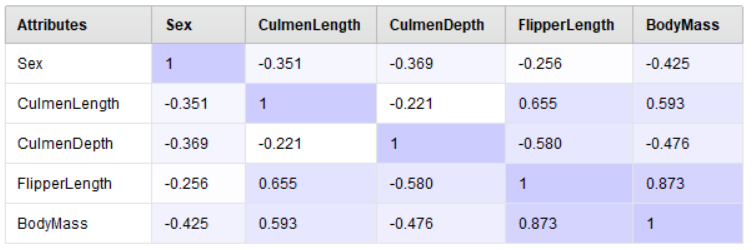
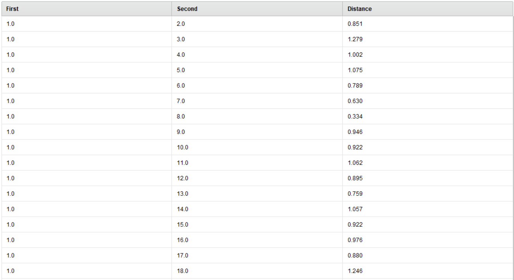

Variable Analysis
Ada banyak cara yang dapat kita lakukan untuk melakukan data analisis. Salah satu caranya adalah dengan memperhatikan variabel yang ada pada suatu dataset. Tujuannya adalah untuk mengetahui apakah variabel tersebut berpengaruh terhadap hasil akhir dari suatu model atau tidak. Untuk part ini, kita akan menjelaskan bagaimana untuk melakukan analisis variabel dengan menggunakan 2 cara berikut:
Correlation (Correlation Matrix)
Similarity Measurement.
Correlation Matrix
Correlation Matrix adalah suatu metode yang digunakan untuk mengetahui seberapa besar hubungan antara dua variabel. Hubungan tersebut dapat berupa hubungan positif, negatif, atau tidak ada hubungan sama sekali.
Untuk implementasi, gunakan node “Correlation Matrix” pada RapidMiner. Atur parameter sesuai dengan kebutuhan. Setelah dijalankan, kita akan mendapatkan hasil berupa matriks yang menunjukkan hubungan antara variabel-variabel yang ada pada dataset.
{kind=link}
Pada gambar di atas, kita dapat lihat bahwa nilai dari correlation matrix itu berada di range -1 sampai 1. Hubungan antar variabel itu dianggap kuat jika nilai correlationnya mendekati 1 atau -1. Sedangkan, jika nilai correlationnya mendekati 0, itu berarti hubungan antar variabel tersebut tidak terlalu signifikan.
Sebagai contoh, pada attribute yang sama (Sex dengan Sex), kita dapat lihat bahwa nilai correlationnya adalah 1. Hal ini menunjukkan bahwa hubungan antara 2 variabel tersebut adalah sama (karena keduanya adalah variabel yang sama). Sedangkan, pada hubungan antara CulmentLength dengan CulmenDepth adalah -0.221 (lebih cenderung mendekati 0). Itu artinya hubungan antara 2 Variable tersebut tidak terlalu signifikan. Di sisi lainnya, hubungan antara FlipperLength dengan BodyMass adalah 0.873. Hal ini menunjukkan bahwa hubungan antara kedua variabel tersebut adalah cukup signifikan.
Note
Gunakan correlation matrix untuk mengetahui hubungan antar variabel. Hal ini dapat membantu anda dalam menentukan variabel mana yang akan digunakan dalam proses analisis.
Similarity Measurement
Similarity Measurement adalah salah satu metode analisa data yang digunakan untuk mengukur seberapa mirip antara kedua data. Hal ini digunakan untuk mengetahui apakah ada data yang memiliki karakteristik yang sama atau tidak. Jika ada yang memiliki kemiripan yang terlalu tinggi, maka data tersebut bisa dianggap sebagai data redundan yang bisa dihapus.
Untuk implementasi, kita dapat menggunakan node “Similarity Measurement” pada RapidMiner. Atur parameter sesuai dengan kebutuhan. Jangan lupa untuk menyalakan “normalize weights” di parameternya. Setelah dijalankan, kita akan mendapatkan hasil berupa matriks yang menunjukkan seberapa mirip antara data yang ada pada dataset.
{kind=link}
Kita juga dapat sorting berdasarkan distance untuk mengetahui apakah ada data yang memiliki distance yang terlalu tinggi maupun terlalu rendah. Gunakan hasil dari similarity measurement ini untuk menentukan apakah ada data redundan maupun outlier (data yang terlalu jauh dari data lainnya).